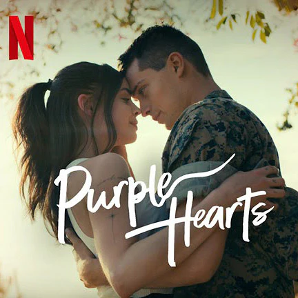
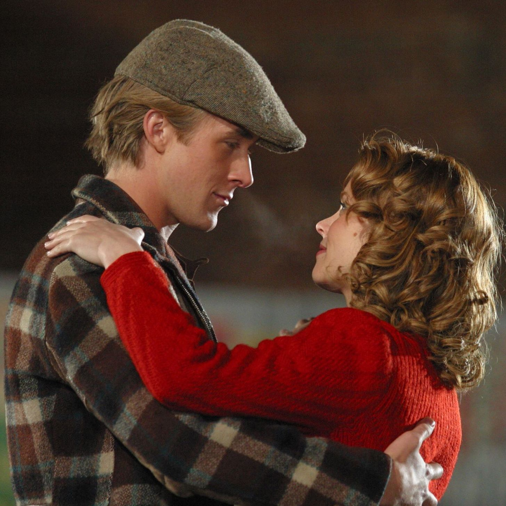

My Top 5 Movies to Watch!
- People we meet on Vacations
- Purple Heart
- The NoteBook
- My Oxford Year
- Regretting You
Why you should watch these movies!
These movies are perfect if you love romance and emotional stories.
People We Meet on Vacation is great because it shows how friendships can turn into love in a really relatable way.
Purple Hearts pulls you in with a fake relationship that slowly becomes real and emotional.
The Notebook is a classic that proves true love never gives up(and will definitely make you cry).
My Oxford Year mixes romance with big life choices and unexpected moments.
Regretting You is super emotional and focuses on love, mistakes, and growing up, which makes it easy to connect too.
People we meet on Vacations
- This is my favorite movie because of its heartwarming story, capturing that relatable, messy ache of realizing your best friend is actually the love of your life while whisking you away on the ultimate summer escape.
Purple Heart

- This is my favorite movie because this one pulls you in with a fake relationship that turns into real love.
Its emotional and intense, and it shows how love can grow even when life is messy and unfair.
The NoteBook

- This movie because its classic love story
that proves true love never gives up.
Its really emotional and will definitely make you cry,
which is why so many people love it.
My Oxford Year
- This movie mixes romance with big dreams and tough choices.
Its inspiring and sad at the same time,
showing how love can change your life in unexpected ways.
Regretting You
- This story is super emotional and focuses on love, mistakes, and growing up.
It feels real and hits hard, especially if you like deep, dramatic stories.